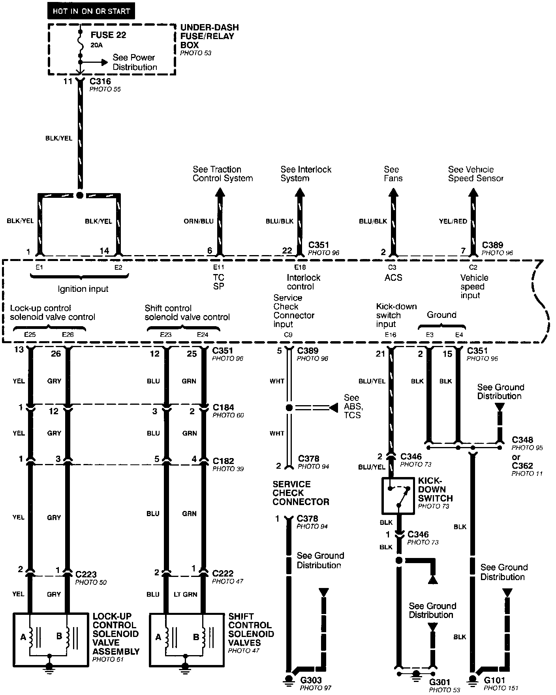
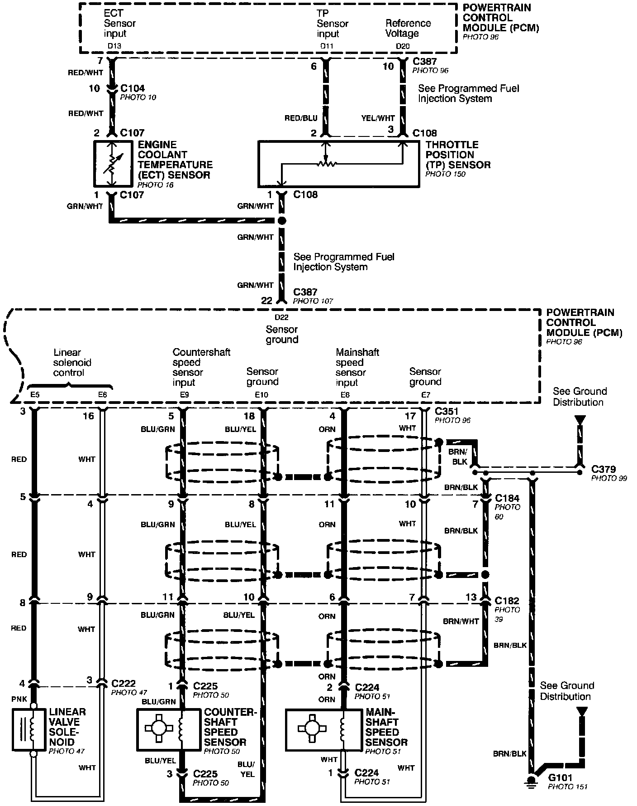
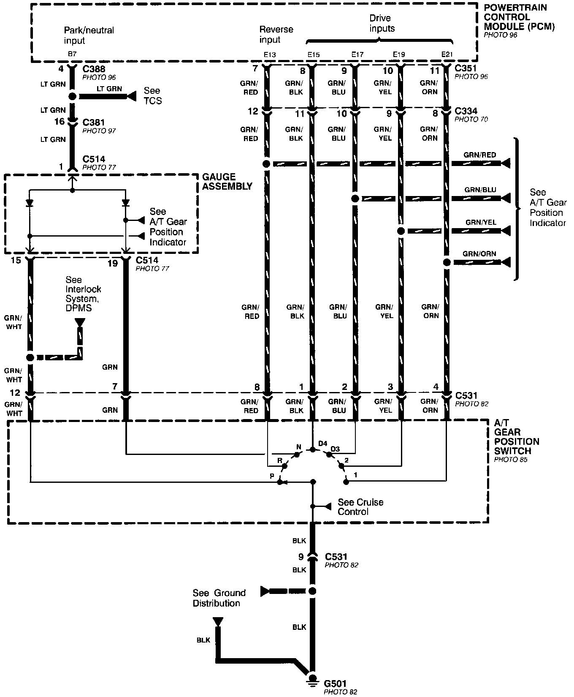
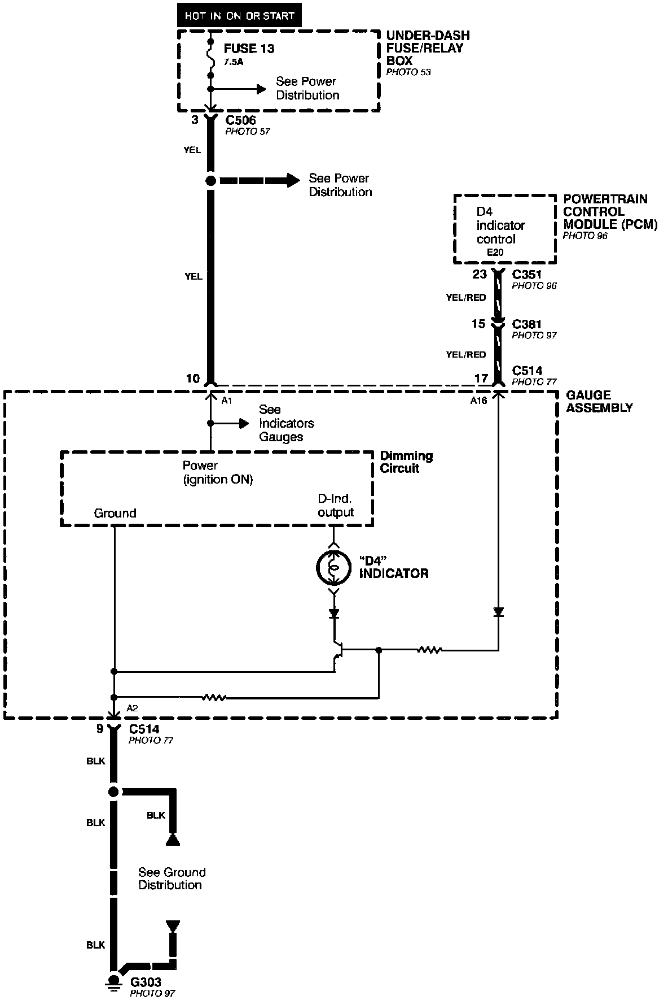

Electrical Diagrams
Automatic Transmission Controls (part 1 0f 4):

Automatic Transmission Controls (part 2 0f 4):

Automatic Transmission Controls (part 3 0f 4):

Automatic Transmission Controls (part 4 0f 4):
